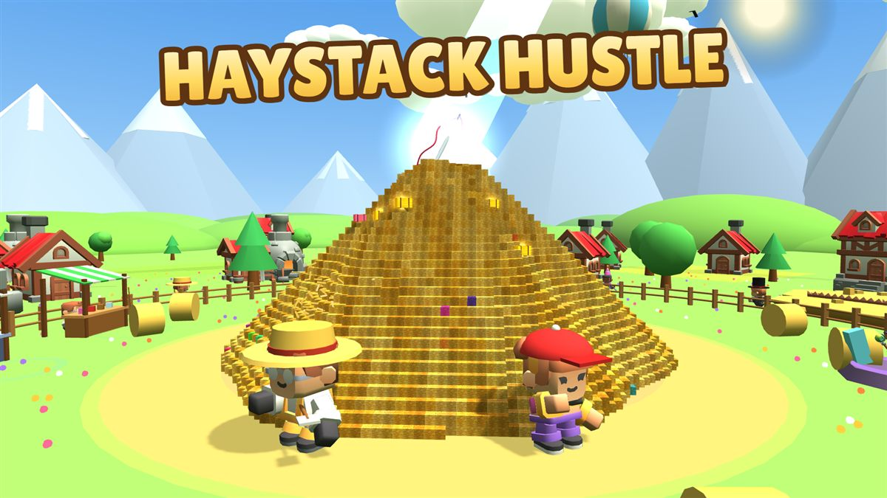
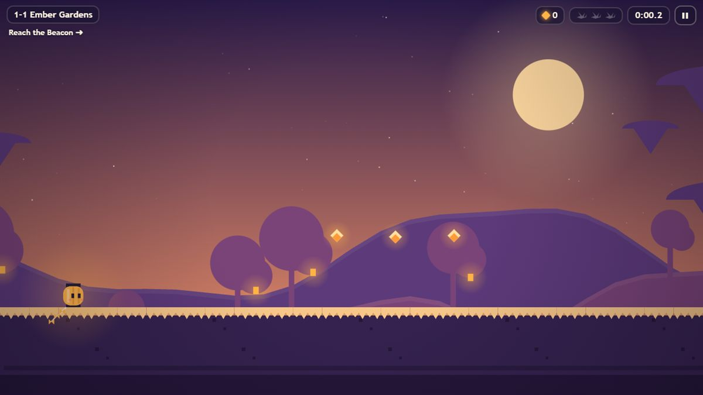
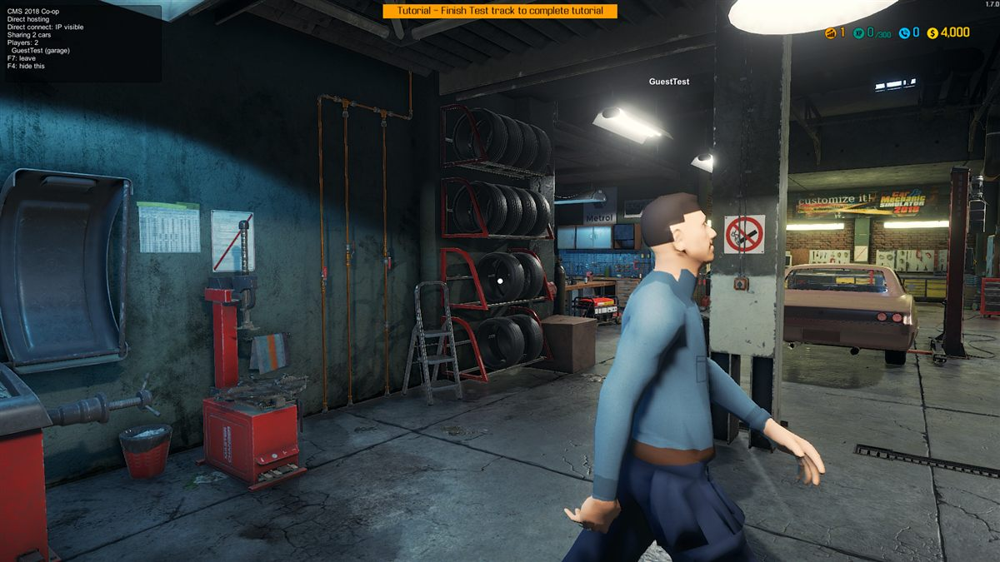

Click or press Esc to skip
Starting up
To begin, click your user name
Loading your personal settings...
Double-click icons on the desktop, or click the things sitting on the hill.
Hi, I'm Matt. On GitHub I'm fishybeing. I make browser games for CrazyGames and client mods for Minecraft. Here are my projects, from a 3D haystack-digging simulator to a papercraft platformer. Double-click an icon on the left, or click the things sitting on the hill: the haystack Haystack Hustle the lantern Kitewick: Lantern Run the grass block Nebula Client

A 3D first-person needle-in-a-haystack simulator. Dig through towering voxel haystacks by hand, pitchfork, dynamite and vacuum, sell the hay, upgrade everything, and race to return the hidden needle.

A papercraft platformer. Guide Wick, a tiny paper lantern with a kite tail, across floating islands to relight Hollowsky's Beacons. Every fall leaves an Echo Wisp that helps you on the next try.
A lightweight client-side utility mod for Minecraft: HUD elements, zoom, freelook, chat tools, waypoints and more, kept up to date across three Minecraft versions at once.

A multiplayer mod for Car Mechanic Simulator 2018. Invite a friend over Steam and fix cars in the same garage. The game has no multiplayer at all, so everything is synced by hand: the cars, every part, the doors and the lifts.
AnyPS5 is an open-source tool that ports PS5 executables to Linux and Windows. I've been sending it small fixes found while building it on Windows and digging through its progress map.
Click Analyze to load the latest numbers.
* Percentage of the functions known to the project so far, not of every PS5 system function.
What I build with.
JavaScript, three.js, Canvas 2D, WebAudio, procedural art and level generation.
CrazyGames SDK (ads, cloud saves, instant multiplayer), Photon Realtime, GitHub Pages.
Java, Fabric, Mixins and Gradle, maintained across several Minecraft versions.
| Name | Original location | Date deleted |
|---|---|---|
| mattinblack11-dotcom | github.com (old username) | Oct 6, 2026 |
Welcome to Matt's desktop
Double-click an icon, or click the haystack, the lantern or the grass block on the hill.
It's now safe to close this tab.